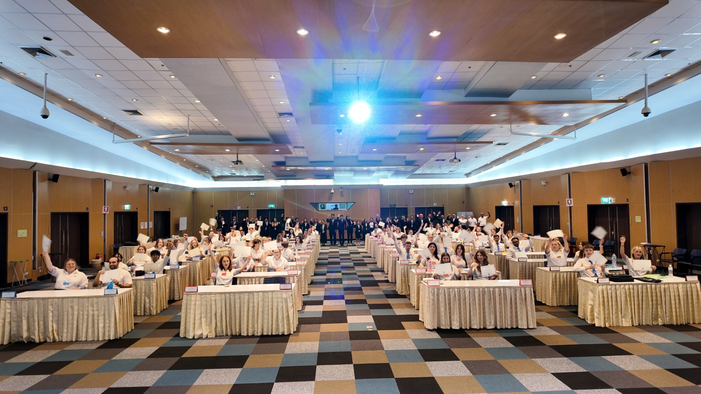

Thinking about teaching abroad but worried you don't have experience? Good news—Thailand is one of the most beginner-friendly countries for new teachers.
In fact, many MediaKids Academy teachers start their very first teaching job in Thailand… and they thrive! Here's why.
1. Thailand Welcomes First-Time Teachers
Schools in Thailand understand that many foreign teachers are new to the profession. What they care about most is your:
- Positive attitude
- Clear communication
- Willingness to learn
- Energy and creativity
You don't need years of teaching experience to make a big impact.
2. MediaKids Provides Full Training & Support
When teaching with MediaKids, you're never alone. We offer:
- Pre-arrival support
- Online orientation
- In-person training
- Lesson plans & worksheets
- Curriculum guidance
- A dedicated coordinator
- Help with documents, visa, and work permit
This structured support system makes it easy to start teaching with confidence.

3. Easy-to-Teach Subjects
Most teachers focus on:
- Conversational English
- Speaking activities
- Simple grammar
- Everyday vocabulary
- Fun classroom games
No advanced academic teaching required.
4. Thai Students Are Friendly & Respectful
One of the biggest reasons new teachers succeed is the supportive atmosphere in Thai schools. Students are usually:
- Cooperative
- Playful
- Curious
- Polite
They learn best through games, activities, and group work—perfect for beginner teachers.

5. Flexible Teaching Style
Thailand allows you to bring your own teaching style. You can:
- Use creativity
- Add your own activities
- Personalize lessons
- Incorporate games & real-life scenarios
This freedom helps new teachers grow quickly and naturally.
6. A Supportive Teacher Community
You'll meet many new teachers from around the world who are also starting their first teaching job. MediaKids hosts:
- Orientation events
- Social media takeovers
- Teacher groups
- Community activities
You'll never feel isolated.
7. A Life-Changing Experience
Teaching in Thailand gives you:
- Confidence
- Leadership skills
- Cultural awareness
- International work experience
- A chance to make an impact
- Stories you'll remember forever
Many teachers say their year in Thailand changed them in the best possible way.

Final Thoughts
If you have the desire to teach, explore the world, and grow as a person, Thailand is the perfect place to begin—no experience needed.
With MediaKids Academy's support, guidance, and community, you'll feel prepared, supported, and inspired from day one.
Ready to Start Your Teaching Journey?
Apply now and begin your adventure with MediaKids Academy.
Apply Now